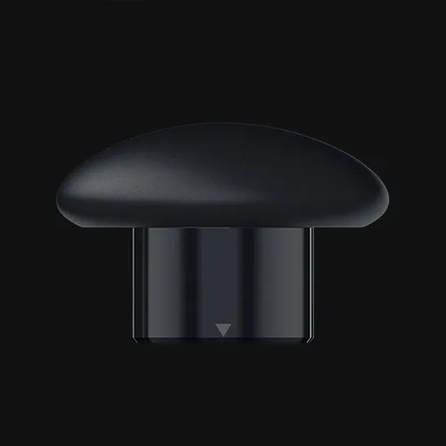
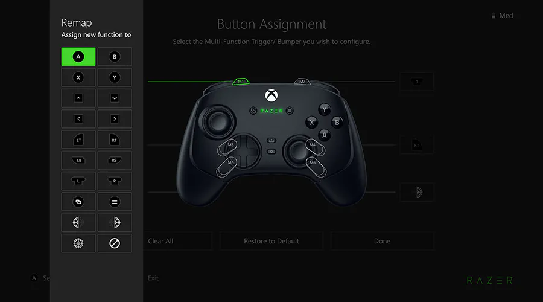
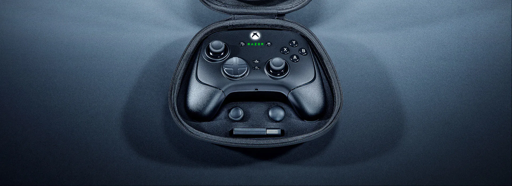

For a limited time, all orders will enjoy free shipping to the United States. Shop Now
>
RAZER WOLVERINE V3 PRO
FOR THE PRO
Stay one step, one shot, and one level above the competition with the Razer Wolverine V3 Pro—the
definitive wireless esports controller. Officially licensed by Xbox, play like the world’s best on
console and PC with speed, control, and precision that helps you clutch up for the win.
4 MOUSE CLICK BACK PADDLES
& 2 CLAW GRIP BUMPERS
6 Remappable Buttons to Outplay Them All
Enjoy the same ultra-responsive actuation found in our top gaming mice with 4 paddles built into the
controller's ergonomic, rubberized handles—topped with 2 claw grip bumpers for even more control.
RAZER™ PRO HYPERTRIGGERS
Instant Response with Lightning-Fast Mouse Click Triggers
Toggle between instant actuation with zero travel time and ultra-precise analog control via two easy-access
slide-locks on the controller’s underside. Be fully immersed in the action and feel every trigger pull
with integrated haptic vibrations.
SHORTER TRIGGER PULL
for faster inputs
LONGER TRIGGER PULL
for greater precision and control
HALL EFFECT PRECISION THUMBSTICKS
Anti-Drift Accuracy with Customizable Sensitivity
Experience analog thumbsticks that are not only more accurate than traditional models, but are smoother,
lighter and more durable thanks to their anti-friction rings and pro-grade materials. Change them up to
suit your playstyle with an interchangeable design that includes 2 types of thumbstick caps.

SHORTER CAP
for more speed
TALLER CAP
for more precision
RAZER HYPERSPEED WIRELESS
Lag-free, Esports-Grade Performance
Delivering an ultra-low-latency 2.4 GHz connection via its USB Type A dongle, experience fast, reliable
performance that meets the demands of the most intense competitive players on Xbox and PC.
By combining the speed of microswitches with the cushioned comfort of a rubber membrane, compete with
quicker inputs that feel just as comfortable to press.
PRO-LEVEL CUSTOMIZATION FOR XBOX & PC
Via the Razer Controller App
Set your thumbstick sensitivity and create custom button layouts using our dedicated app. Store a
personalized profile brand be ready for any type of competition.br
THUMBSTICK SENSITIVITY
BUTTON LAYOUT CUSTOMIZATION
VIBRATION SENSITIVITY

PC TOURNAMENT MODE
1000Hz Polling Rate for Competitive Play on PC
When playing wired on PC, a special Tournament Mode enabling 1000Hz polling rate can be switched on using
the companion app or via a controller shortcut:
Standard Mode
PC Tournament Mode
CARRYING CASE AND 10 FT CABLE
Bring your A-Game anywhere with a custom-built carrying case that holds your controller and all its
accessories, including 2 replaceable thumbstick caps and a 10 ft cable.

Razer Wolverine V3 Pro & Wolverine V3 Tournament Edition
2 Hall Effect Analog triggers with Mouse Click trigger stops
2 Hall Effect Analog triggers with Mouse Click trigger stops
Thumbsticks
Anti-drift Hall Effect analog thumbsticks
Anti-drift Hall Effect analog thumbsticks
Mechanical Action Buttons
Razer Mecha Tactile Action Buttons + 8 Way D-Pad
Razer Mecha Tactile Action Buttons + 8 Way D-Pad
1000Hz PC Tournament Mode
Yes / Wired on PC
Yes / Wired on PC
Carrying Case
Yes
No
We’ve Got You Covered
Get up to 1 year of warranty and access reliable tech support. Purchase directly from RazerStore and get 14
days risk‑free returns.
FAQ
Does the Razer Wolverine V3 Tournament Edition support wireless connectivity?
No, the Razer Wolverine V3 TE is a fully wired controller on Xbox Series X, Xbox Series S and PC.
The controller comes with a 10ft cable for connectivity.
Can you use the Razer Wolverine V3 TE on PC?
Yes, you can use the Razer Wolverine V3 TE on PC. To get started, simply connect the controller to
your PC via the included 10ft cable. The controller's drivers will be automatically installed and
you’re ready to go.
What is the polling rate of the Wolverine V3 TE?
Wolverine V3 TE features a 250Hz polling rate when connected to Xbox.
On PC, a special Tournament Mode enabling 1000Hz polling rate can be switched on using the companion
app or via a controller shortcut:
Standard Mode: Function + Menu + X
PC Tournament Mode: Function + Menu + A
What is the difference between the Razer Wolverine V3 Pro and V3 Tournament Edition?
The main difference between the Razer Wolverine V3 Pro & the V3 Tournament Edition is the wireless
compatibility on the pro. Wolverine V3 Pro also features a carrying case, swappable thumbstick caps,
and more advanced haptics.